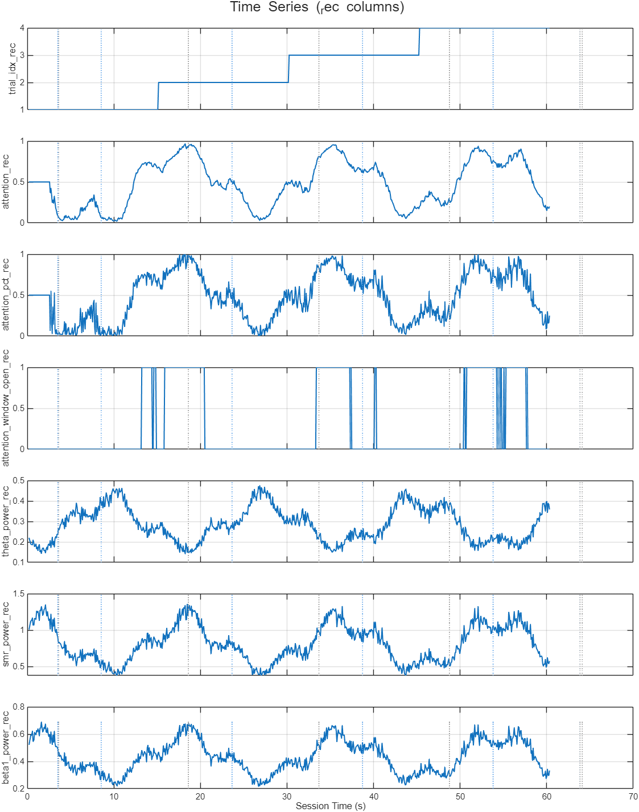
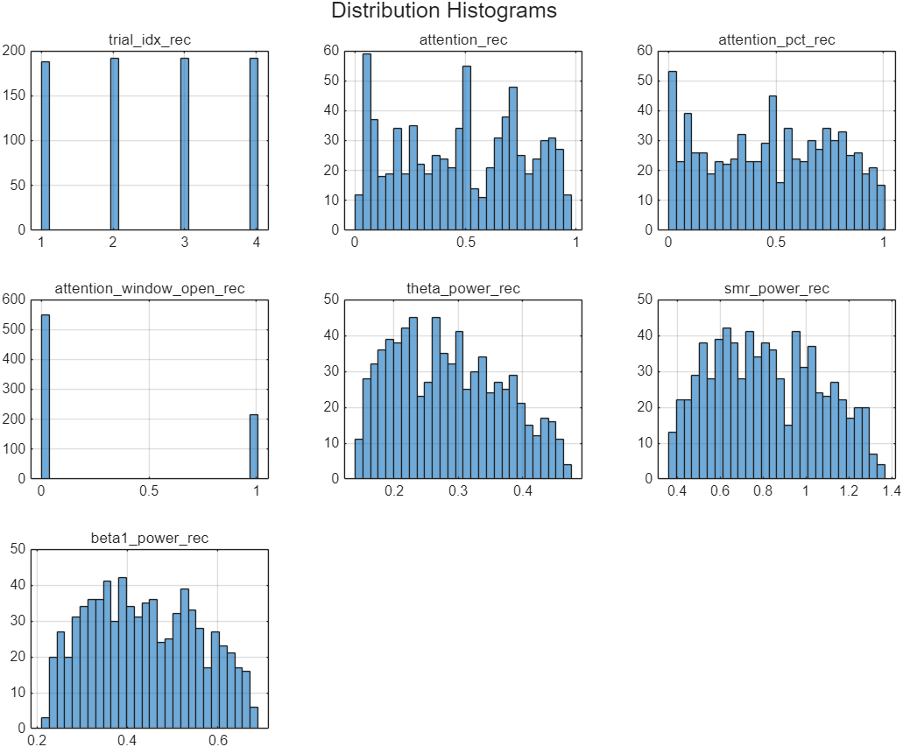
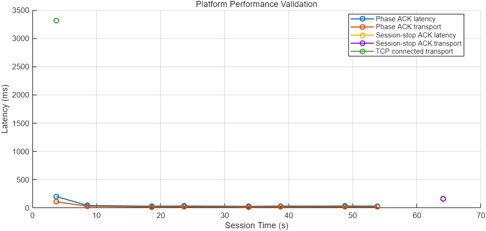

Metrics include phase and session_stop acknowledgment latency.
| section | key | N | mean | std | min | median | max |
|---|---|---|---|---|---|---|---|
| rec | trial_idx_rec | 764 | 2.5079 | 1.1164 | 1 | 3 | 4 |
| rec | attention_rec | 764 | 0.4803 | 0.2813 | 0.0221 | 0.4950 | 0.9662 |
| rec | attention_pct_rec | 764 | 0.4794 | 0.2906 | 0.0033 | 0.5000 | 1 |
| rec | attention_window_open_rec | 764 | 0.2827 | 0.4506 | 0 | 0 | 1 |
| rec | theta_power_rec | 764 | 0.2850 | 0.0837 | 0.1411 | 0.2775 | 0.4750 |
| rec | smr_power_rec | 764 | 0.8174 | 0.2508 | 0.3771 | 0.7954 | 1.3502 |
| rec | beta1_power_rec | 764 | 0.4375 | 0.1195 | 0.2179 | 0.4291 | 0.6881 |
| log | coin_collected | 31 | |||||
| log | coin_spawn | 42 | |||||
| log | enrolled | 1 | |||||
| log | menu_select_attention | 1 | |||||
| log | phase_a_end | 4 | |||||
| log | phase_a_start | 4 | |||||
| log | phase_ack | 8 | |||||
| log | phase_ack_latency_ms | 8 | |||||
| log | phase_ack_transport_ms | 8 | |||||
| log | phase_b_end | 5 | |||||
| log | phase_b_start | 4 | |||||
| log | scene_loaded | 2 | |||||
| log | scene_unloaded | 1 | |||||
| log | session_start | 1 | |||||
| log | session_stop_ack | 1 | |||||
| log | session_stop_ack_latency_ms | 1 | |||||
| log | session_stop_ack_transport_ms | 1 | |||||
| log | tcp_connected | 1 | |||||
| log | tcp_connected_transport_ms | 1 | |||||
| log | trial_end | 5 | |||||
| log | trial_start | 4 | |||||
| perf | phase_ack_latency_ms | 8 | 54.1741 | 59.5743 | 27.7021 | 32.7820 | 201.2250 |
| perf | phase_ack_transport_ms | 8 | 29.8686 | 31.9569 | 15.4760 | 17.3031 | 108.1610 |
| perf | session_stop_ack_latency_ms | 1 | 169.1418 | 0 | 169.1418 | 169.1418 | 169.1418 |
| perf | session_stop_ack_transport_ms | 1 | 160.4445 | 0 | 160.4445 | 160.4445 | 160.4445 |
| perf | tcp_connected_transport_ms | 1 | 3320.0684 | 0 | 3320.0684 | 3320.0684 | 3320.0684 |
Full CSV: report/summary.csv
| metric | N | mean | std | min | median | max |
|---|---|---|---|---|---|---|
| phase_ack_latency_ms | 8 | 54.1741 | 59.5743 | 27.7021 | 32.7820 | 201.2250 |
| session_stop_ack_latency_ms | 1 | 169.1418 | 0 | 169.1418 | 169.1418 | 169.1418 |
| phase_ack_transport_ms | 8 | 29.8686 | 31.9568 | 15.4760 | 17.3031 | 108.1610 |
| session_stop_ack_transport_ms | 1 | 160.4445 | 0 | 160.4445 | 160.4445 | 160.4445 |
| tcp_connected_transport_ms | 1 | 3320.0684 | 0 | 3320.0684 | 3320.0684 | 3320.0684 |
| unity_sync_transport_ms | 9 | 44.3770 | 52.8019 | 15.4760 | 17.3383 | 160.4445 |
| unity_marker_transport_ms | 88 | 256.2358 | 812.8234 | 1.7288 | 38.7043 | 3320.0684 |
Full CSV: performance_summary.csv
| t_session_sec | abs_ts | source | kind | key | value | info |
|---|---|---|---|---|---|---|
| 0.0308 | 1785919012.9844 | system | subject | enrolled | 0 | id=SMOKE_ATTENTION name= sex= age=0 handedness= note=dual-end smoke test |
| 3.5261 | 1785919016.4797 | matlab | phase | phase_a_start | 1 | dur=5s | send_seq=0 |
| 3.6229 | 1785919016.5765 | matlab | trial | trial_start | 1 | |
| 3.7145 | 1785919016.6682 | unity | marker | tcp_connected | 0 | scene=_Bootstrap | unity_ts=1785919013.348097 | recv_ts=1785919016.668165 | seq=0 | transport_ms=3320.068 | info=127.0.0.1:5555 |
| 3.7145 | 1785919016.6682 | system | latency | tcp_connected_transport_ms | 3320.0684 | scene=_Bootstrap seq=0 endpoint=127.0.0.1:5555 |
| 3.7187 | 1785919016.6723 | unity | marker | menu_select_attention | 0 | scene=_Bootstrap | unity_ts=1785919013.440278 | recv_ts=1785919016.672319 | seq=1 | transport_ms=3232.041 | info=Game_Attention |
| 3.7201 | 1785919016.6737 | unity | marker | scene_loaded | 0 | scene=_Bootstrap | unity_ts=1785919013.441278 | recv_ts=1785919016.673679 | seq=2 | transport_ms=3232.401 | info=MainMenu |
| 3.7214 | 1785919016.6750 | unity | marker | scene_unloaded | 0 | scene=_Bootstrap | unity_ts=1785919013.443332 | recv_ts=1785919016.675006 | seq=3 | transport_ms=3231.674 | info=MainMenu |
| 3.7234 | 1785919016.6770 | unity | marker | scene_loaded | 0 | scene=_Bootstrap | unity_ts=1785919013.460333 | recv_ts=1785919016.676978 | seq=4 | transport_ms=3216.645 | info=Game_Attention |
| 3.7270 | 1785919016.6806 | unity | marker | session_start | 0 | scene=_Bootstrap | unity_ts=1785919013.460333 | recv_ts=1785919016.680603 | seq=5 | transport_ms=3220.270 | info=attention |
| 3.7273 | 1785919016.6810 | unity | sync | phase_ack | 0 | scene=_Bootstrap | unity_ts=1785919016.572796 | recv_ts=1785919016.680957 | seq=6 | transport_ms=108.161 | info=A |
| 3.7273 | 1785919016.6810 | system | latency | phase_ack_transport_ms | 108.1610 | phase=A trial=1 ack_seq=6 unity_phase=A |
| 3.7273 | 1785919016.6810 | system | latency | phase_ack_latency_ms | 201.2250 | phase=A trial=1 send_seq=0 ack_seq=6 unity_phase=A |
| 8.5357 | 1785919021.4894 | matlab | phase | phase_a_end | 1 | |
| 8.5370 | 1785919021.4907 | matlab | phase | phase_b_start | 1 | dur=10s | send_seq=61 |
| 8.5797 | 1785919021.5333 | unity | sync | phase_ack | 1 | scene=Game_Attention | unity_ts=1785919021.503850 | recv_ts=1785919021.533336 | seq=7 | transport_ms=29.486 | info=B |
| 8.5797 | 1785919021.5333 | system | latency | phase_ack_transport_ms | 29.4857 | phase=B trial=1 ack_seq=7 unity_phase=B |
| 8.5797 | 1785919021.5333 | system | latency | phase_ack_latency_ms | 42.6760 | phase=B trial=1 send_seq=61 ack_seq=7 unity_phase=B |
| 11.0946 | 1785919024.0482 | unity | marker | coin_spawn | -1.9726 | scene=Game_Attention | unity_ts=1785919024.024193 | recv_ts=1785919024.048225 | seq=8 | transport_ms=24.032 | info=attention |
| 15.1846 | 1785919028.1382 | unity | marker | coin_spawn | -1.7419 | scene=Game_Attention | unity_ts=1785919028.127811 | recv_ts=1785919028.138178 | seq=9 | transport_ms=10.366 | info=attention |
| 16.3749 | 1785919029.3286 | unity | marker | coin_spawn | -2.0602 | scene=Game_Attention | unity_ts=1785919029.272791 | recv_ts=1785919029.328557 | seq=10 | transport_ms=55.766 | info=attention |
| 17.0065 | 1785919029.9601 | unity | marker | coin_spawn | -2.2197 | scene=Game_Attention | unity_ts=1785919029.948434 | recv_ts=1785919029.960143 | seq=11 | transport_ms=11.709 | info=attention |
| 17.6142 | 1785919030.5678 | unity | marker | coin_collected | 10 | scene=Game_Attention | unity_ts=1785919030.548125 | recv_ts=1785919030.567829 | seq=12 | transport_ms=19.704 | info=attention |
| 17.6146 | 1785919030.5682 | unity | marker | coin_spawn | -2.2545 | scene=Game_Attention | unity_ts=1785919030.558125 | recv_ts=1785919030.568218 | seq=13 | transport_ms=10.093 | info=attention |
| 18.2223 | 1785919031.1759 | unity | marker | coin_spawn | -1.9937 | scene=Game_Attention | unity_ts=1785919031.165212 | recv_ts=1785919031.175940 | seq=14 | transport_ms=10.728 | info=attention |
| 18.2227 | 1785919031.1763 | unity | marker | coin_collected | 10 | scene=Game_Attention | unity_ts=1785919031.167212 | recv_ts=1785919031.176279 | seq=15 | transport_ms=9.067 | info=attention |
| 18.5978 | 1785919031.5514 | matlab | phase | phase_b_end | 1 | |
| 18.5983 | 1785919031.5519 | matlab | trial | trial_end | 1 | |
| 18.5992 | 1785919031.5528 | matlab | phase | phase_a_start | 2 | dur=5s | send_seq=190 |
| 18.6140 | 1785919031.5676 | matlab | trial | trial_start | 2 | |
| 18.6296 | 1785919031.5832 | unity | sync | phase_ack | 0 | scene=Game_Attention | unity_ts=1785919031.567671 | recv_ts=1785919031.583180 | seq=16 | transport_ms=15.509 | info=A |
| 18.6296 | 1785919031.5832 | system | latency | phase_ack_transport_ms | 15.5089 | phase=A trial=2 ack_seq=16 unity_phase=A |
| 18.6296 | 1785919031.5832 | system | latency | phase_ack_latency_ms | 30.3869 | phase=A trial=2 send_seq=190 ack_seq=16 unity_phase=A |
| 23.6496 | 1785919036.6032 | matlab | phase | phase_a_end | 2 | |
| 23.6503 | 1785919036.6039 | matlab | phase | phase_b_start | 2 | dur=10s | send_seq=255 |
| 23.6842 | 1785919036.6378 | unity | sync | phase_ack | 1 | scene=Game_Attention | unity_ts=1785919036.619209 | recv_ts=1785919036.637796 | seq=17 | transport_ms=18.587 | info=B |
| 23.6842 | 1785919036.6378 | system | latency | phase_ack_transport_ms | 18.5871 | phase=B trial=2 ack_seq=17 unity_phase=B |
| 23.6842 | 1785919036.6378 | system | latency | phase_ack_latency_ms | 33.9019 | phase=B trial=2 send_seq=255 ack_seq=17 unity_phase=B |
| 23.9019 | 1785919036.8555 | unity | marker | coin_spawn | -1.7220 | scene=Game_Attention | unity_ts=1785919036.836798 | recv_ts=1785919036.855493 | seq=18 | transport_ms=18.695 | info=attention |
| 23.9022 | 1785919036.8558 | unity | marker | coin_collected | 10 | scene=Game_Attention | unity_ts=1785919036.839797 | recv_ts=1785919036.855836 | seq=19 | transport_ms=16.038 | info=attention |
| 24.6087 | 1785919037.5623 | unity | marker | coin_spawn | -2.0417 | scene=Game_Attention | unity_ts=1785919037.495532 | recv_ts=1785919037.562339 | seq=20 | transport_ms=66.807 | info=attention |
| 24.6091 | 1785919037.5627 | unity | marker | coin_collected | 10 | scene=Game_Attention | unity_ts=1785919037.499535 | recv_ts=1785919037.562735 | seq=21 | transport_ms=63.200 | info=attention |
| 25.3954 | 1785919038.3490 | unity | marker | coin_collected | 10 | scene=Game_Attention | unity_ts=1785919038.339306 | recv_ts=1785919038.349030 | seq=22 | transport_ms=9.724 | info=attention |
| 25.3959 | 1785919038.3495 | unity | marker | coin_spawn | -1.7959 | scene=Game_Attention | unity_ts=1785919038.345306 | recv_ts=1785919038.349481 | seq=23 | transport_ms=4.175 | info=attention |
| 26.3378 | 1785919039.2914 | unity | marker | coin_spawn | -2.1874 | scene=Game_Attention | unity_ts=1785919039.270685 | recv_ts=1785919039.291449 | seq=24 | transport_ms=20.764 | info=attention |
| 27.2616 | 1785919040.2152 | unity | marker | coin_spawn | -2.2414 | scene=Game_Attention | unity_ts=1785919040.205228 | recv_ts=1785919040.215223 | seq=25 | transport_ms=9.995 | info=attention |
| 28.2805 | 1785919041.2341 | unity | marker | coin_spawn | -1.7287 | scene=Game_Attention | unity_ts=1785919041.162373 | recv_ts=1785919041.234112 | seq=26 | transport_ms=71.739 | info=attention |
| 30.2415 | 1785919043.1951 | unity | marker | coin_spawn | -1.9464 | scene=Game_Attention | unity_ts=1785919043.146623 | recv_ts=1785919043.195130 | seq=27 | transport_ms=48.507 | info=attention |
| 33.1440 | 1785919046.0976 | unity | marker | coin_spawn | -1.8556 | scene=Game_Attention | unity_ts=1785919046.040438 | recv_ts=1785919046.097613 | seq=28 | transport_ms=57.175 | info=attention |
| 33.6778 | 1785919046.6314 | matlab | phase | phase_b_end | 2 | |
| 33.6784 | 1785919046.6320 | matlab | trial | trial_end | 2 | |
| 33.6818 | 1785919046.6354 | matlab | phase | phase_a_start | 3 | dur=5s | send_seq=384 |
| 33.6938 | 1785919046.6474 | matlab | trial | trial_start | 3 | |
| 33.7095 | 1785919046.6631 | unity | sync | phase_ack | 0 | scene=Game_Attention | unity_ts=1785919046.647604 | recv_ts=1785919046.663080 | seq=29 | transport_ms=15.476 | info=A |
| 33.7095 | 1785919046.6631 | system | latency | phase_ack_transport_ms | 15.4760 | phase=A trial=3 ack_seq=29 unity_phase=A |
| 33.7095 | 1785919046.6631 | system | latency | phase_ack_latency_ms | 27.7021 | phase=A trial=3 send_seq=384 ack_seq=29 unity_phase=A |
| 38.7223 | 1785919051.6759 | matlab | phase | phase_a_end | 3 | |
| 38.7231 | 1785919051.6767 | matlab | phase | phase_b_start | 3 | dur=10s | send_seq=449 |
| 38.7551 | 1785919051.7087 | unity | sync | phase_ack | 1 | scene=Game_Attention | unity_ts=1785919051.691552 | recv_ts=1785919051.708676 | seq=30 | transport_ms=17.124 | info=B |
| 38.7551 | 1785919051.7087 | system | latency | phase_ack_transport_ms | 17.1237 | phase=B trial=3 ack_seq=30 unity_phase=B |
| 38.7551 | 1785919051.7087 | system | latency | phase_ack_latency_ms | 31.9371 | phase=B trial=3 send_seq=449 ack_seq=30 unity_phase=B |
| 39.0691 | 1785919052.0227 | unity | marker | coin_spawn | -1.9435 | scene=Game_Attention | unity_ts=1785919051.962528 | recv_ts=1785919052.022705 | seq=31 | transport_ms=60.177 | info=attention |
| 39.0695 | 1785919052.0231 | unity | marker | coin_collected | 10 | scene=Game_Attention | unity_ts=1785919051.963530 | recv_ts=1785919052.023083 | seq=32 | transport_ms=59.553 | info=attention |
| 39.5250 | 1785919052.4786 | unity | marker | coin_collected | 10 | scene=Game_Attention | unity_ts=1785919052.463043 | recv_ts=1785919052.478601 | seq=33 | transport_ms=15.558 | info=attention |
| 39.5253 | 1785919052.4789 | unity | marker | coin_spawn | -2.1055 | scene=Game_Attention | unity_ts=1785919052.466043 | recv_ts=1785919052.478931 | seq=34 | transport_ms=12.888 | info=attention |
| 40.0777 | 1785919053.0313 | unity | marker | coin_collected | 10 | scene=Game_Attention | unity_ts=1785919052.963155 | recv_ts=1785919053.031317 | seq=35 | transport_ms=68.162 | info=attention |
| 40.0781 | 1785919053.0317 | unity | marker | coin_spawn | -2.0424 | scene=Game_Attention | unity_ts=1785919052.965154 | recv_ts=1785919053.031680 | seq=36 | transport_ms=66.525 | info=attention |
| 40.5476 | 1785919053.5012 | unity | marker | coin_collected | 10 | scene=Game_Attention | unity_ts=1785919053.483379 | recv_ts=1785919053.501198 | seq=37 | transport_ms=17.819 | info=attention |
| 40.5479 | 1785919053.5015 | unity | marker | coin_spawn | -2.0148 | scene=Game_Attention | unity_ts=1785919053.486379 | recv_ts=1785919053.501538 | seq=38 | transport_ms=15.159 | info=attention |
| 41.1744 | 1785919054.1281 | unity | marker | coin_spawn | -2.1018 | scene=Game_Attention | unity_ts=1785919054.078262 | recv_ts=1785919054.128051 | seq=39 | transport_ms=49.789 | info=attention |
| 41.1748 | 1785919054.1284 | unity | marker | coin_collected | 10 | scene=Game_Attention | unity_ts=1785919054.083262 | recv_ts=1785919054.128406 | seq=40 | transport_ms=45.144 | info=attention |
| 41.7881 | 1785919054.7417 | unity | marker | coin_collected | 10 | scene=Game_Attention | unity_ts=1785919054.723117 | recv_ts=1785919054.741699 | seq=41 | transport_ms=18.582 | info=attention |
| 41.7884 | 1785919054.7420 | unity | marker | coin_spawn | -1.8090 | scene=Game_Attention | unity_ts=1785919054.732117 | recv_ts=1785919054.742039 | seq=42 | transport_ms=9.922 | info=attention |
| 42.4956 | 1785919055.4492 | unity | marker | coin_collected | 10 | scene=Game_Attention | unity_ts=1785919055.403511 | recv_ts=1785919055.449210 | seq=43 | transport_ms=45.699 | info=attention |
| 42.4959 | 1785919055.4496 | unity | marker | coin_spawn | -2.0540 | scene=Game_Attention | unity_ts=1785919055.404511 | recv_ts=1785919055.449554 | seq=44 | transport_ms=45.043 | info=attention |
| 43.2033 | 1785919056.1569 | unity | marker | coin_collected | 10 | scene=Game_Attention | unity_ts=1785919056.083248 | recv_ts=1785919056.156941 | seq=45 | transport_ms=73.693 | info=attention |
| 43.2037 | 1785919056.1573 | unity | marker | coin_spawn | -2.1863 | scene=Game_Attention | unity_ts=1785919056.093247 | recv_ts=1785919056.157284 | seq=46 | transport_ms=64.037 | info=attention |
| 43.8133 | 1785919056.7669 | unity | marker | coin_collected | 10 | scene=Game_Attention | unity_ts=1785919056.743090 | recv_ts=1785919056.766910 | seq=47 | transport_ms=23.820 | info=attention |
| 43.8136 | 1785919056.7672 | unity | marker | coin_spawn | -1.9976 | scene=Game_Attention | unity_ts=1785919056.752090 | recv_ts=1785919056.767243 | seq=48 | transport_ms=15.153 | info=attention |
| 44.5200 | 1785919057.4737 | unity | marker | coin_spawn | -2.1687 | scene=Game_Attention | unity_ts=1785919057.418983 | recv_ts=1785919057.473669 | seq=49 | transport_ms=54.687 | info=attention |
| 44.5204 | 1785919057.4740 | unity | marker | coin_collected | 10 | scene=Game_Attention | unity_ts=1785919057.423982 | recv_ts=1785919057.474019 | seq=50 | transport_ms=50.037 | info=attention |
| 45.3081 | 1785919058.2617 | unity | marker | coin_spawn | -1.8369 | scene=Game_Attention | unity_ts=1785919058.215975 | recv_ts=1785919058.261675 | seq=51 | transport_ms=45.700 | info=attention |
| 45.3084 | 1785919058.2620 | unity | marker | coin_collected | 10 | scene=Game_Attention | unity_ts=1785919058.223975 | recv_ts=1785919058.262010 | seq=52 | transport_ms=38.035 | info=attention |
| 47.4287 | 1785919060.3823 | unity | marker | coin_spawn | -2.1494 | scene=Game_Attention | unity_ts=1785919060.350682 | recv_ts=1785919060.382337 | seq=53 | transport_ms=31.655 | info=attention |
| 48.7495 | 1785919061.7031 | matlab | phase | phase_b_end | 3 | |
| 48.7499 | 1785919061.7035 | matlab | trial | trial_end | 3 | |
| 48.7505 | 1785919061.7041 | matlab | phase | phase_a_start | 4 | dur=5s | send_seq=578 |
| 48.7660 | 1785919061.7196 | matlab | trial | trial_start | 4 | |
| 48.7836 | 1785919061.7372 | unity | sync | phase_ack | 0 | scene=Game_Attention | unity_ts=1785919061.719860 | recv_ts=1785919061.737198 | seq=54 | transport_ms=17.338 | info=A |
| 48.7836 | 1785919061.7372 | system | latency | phase_ack_transport_ms | 17.3383 | phase=A trial=4 ack_seq=54 unity_phase=A |
| 48.7836 | 1785919061.7372 | system | latency | phase_ack_latency_ms | 33.1190 | phase=A trial=4 send_seq=578 ack_seq=54 unity_phase=A |
| 53.7996 | 1785919066.7533 | matlab | phase | phase_a_end | 4 | |
| 53.8001 | 1785919066.7538 | matlab | phase | phase_b_start | 4 | dur=10s | send_seq=643 |
| 53.8326 | 1785919066.7862 | unity | sync | phase_ack | 1 | scene=Game_Attention | unity_ts=1785919066.768939 | recv_ts=1785919066.786207 | seq=55 | transport_ms=17.268 | info=B |
| 53.8326 | 1785919066.7862 | system | latency | phase_ack_transport_ms | 17.2679 | phase=B trial=4 ack_seq=55 unity_phase=B |
| 53.8326 | 1785919066.7862 | system | latency | phase_ack_latency_ms | 32.4450 | phase=B trial=4 send_seq=643 ack_seq=55 unity_phase=B |
| 54.3681 | 1785919067.3217 | unity | marker | coin_spawn | -1.7739 | scene=Game_Attention | unity_ts=1785919067.308038 | recv_ts=1785919067.321732 | seq=56 | transport_ms=13.695 | info=attention |
| 54.5242 | 1785919067.4779 | unity | marker | coin_collected | 10 | scene=Game_Attention | unity_ts=1785919067.412646 | recv_ts=1785919067.477858 | seq=57 | transport_ms=65.212 | info=attention |
| 54.9907 | 1785919067.9443 | unity | marker | coin_spawn | -2.1052 | scene=Game_Attention | unity_ts=1785919067.906591 | recv_ts=1785919067.944335 | seq=58 | transport_ms=37.744 | info=attention |
| 54.9911 | 1785919067.9447 | unity | marker | coin_collected | 10 | scene=Game_Attention | unity_ts=1785919067.912591 | recv_ts=1785919067.944684 | seq=59 | transport_ms=32.093 | info=attention |
Full event log: events_log.csv